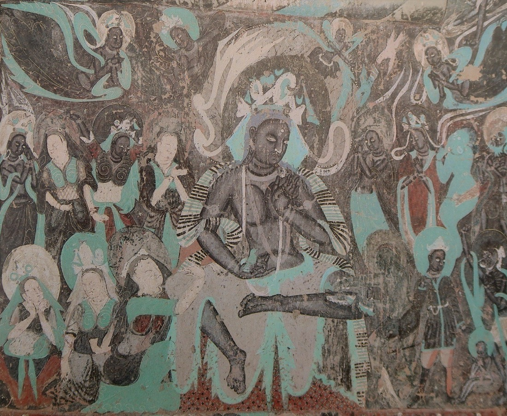
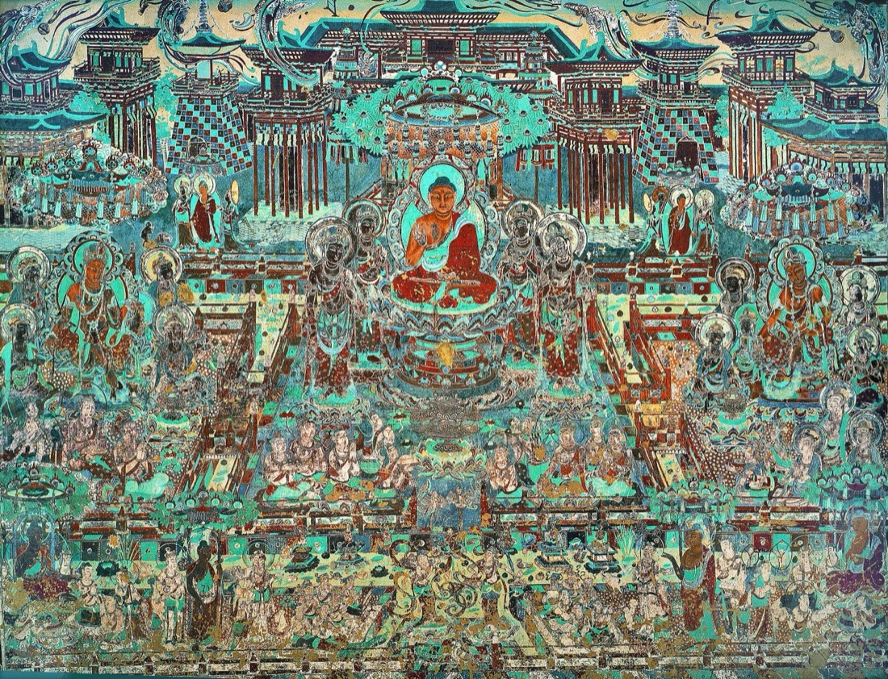
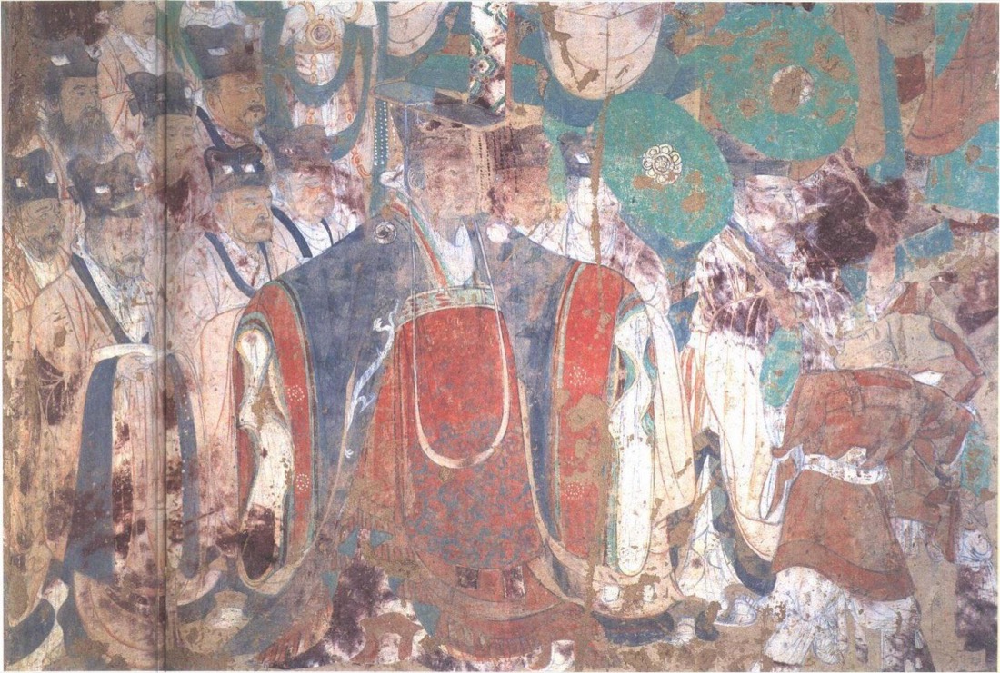
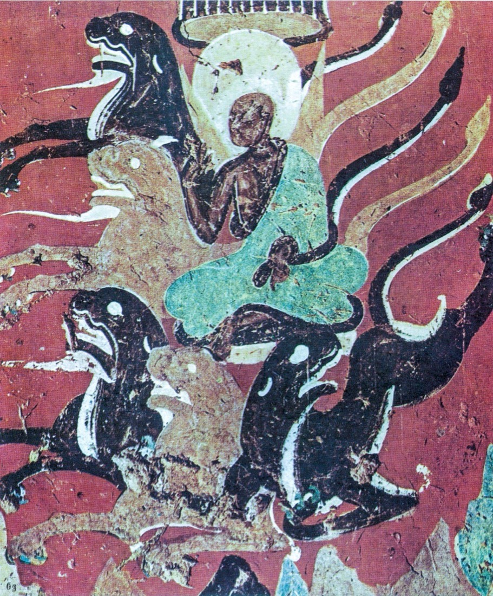
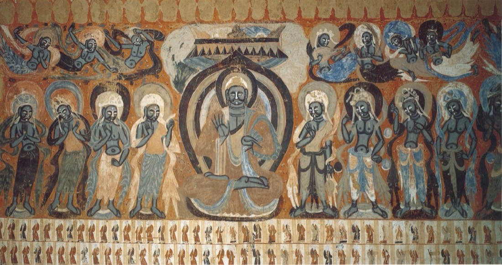
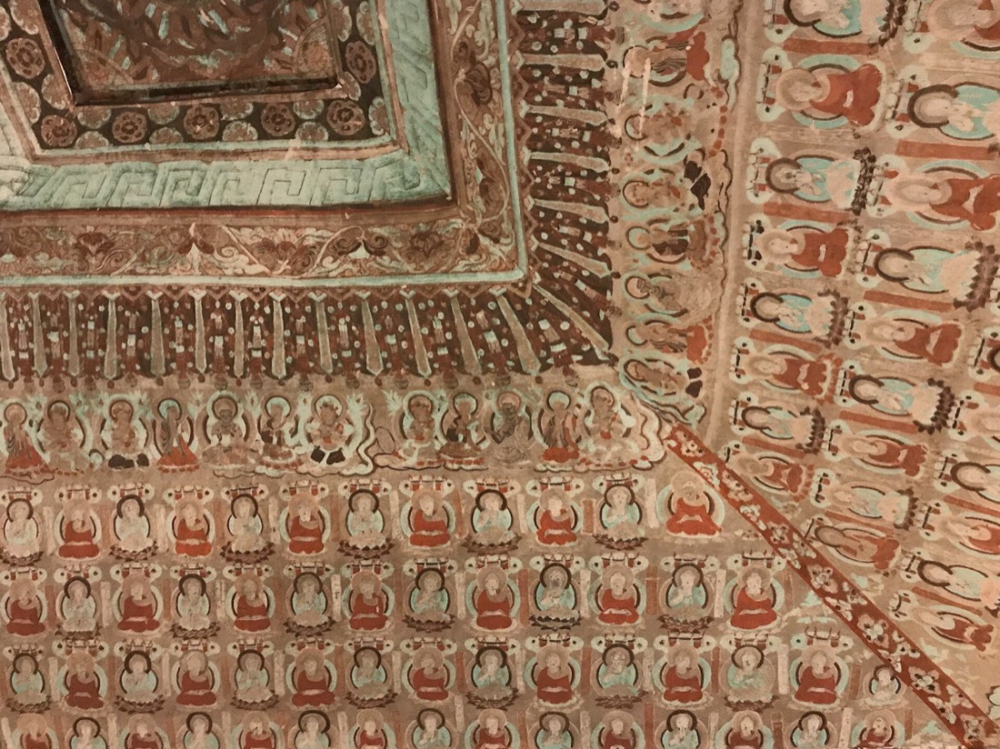

一眼千年
一千六百年前，画工在鸣沙山的崖壁上调和朱砂与石绿。
一千六百年后，那些颜色仍在墙上低声说话。
请向上滑动——走进洞窟，让光落在颜色上。
时间的颜色
十个朝代、千年营造。沿这根斑驳的地仗层长轴向下，看每一代画工如何调自己的颜色。
北凉
五世纪 · 西域风起最早的一批洞窟以土红大面积铺底，配石青、石绿，色块浓重、笔触拙朴，带着明显的西域龟兹风。
北魏 · 西魏
六世纪 · 中原初融九色鹿的故事画在土红底上展开；西魏以后中原画风传入，底色转白，色彩变得清丽疏朗。当年明艳的肉色，如今多已氧化成深褐——颜色没有消失，只是换了模样。

隋
七世纪 · 承前启后短短三十余年开窟近百。用色渐趋华丽，朱砂与金大量登场，为盛唐的绚烂做足铺垫。
盛唐
八世纪 · 金碧辉煌敦煌艺术的巅峰。青、绿、白、金交织成金碧山水般的经变画，色彩层次丰富到近乎奢侈。

晚唐 · 五代 · 宋
九至十一世纪 · 世俗入画供养人像越来越多，市井服饰、嫁娶宴饮入画。用色趋于温和的暖调，赭石、绛紫成为主旋律。

西夏 · 元
十一至十四世纪 · 清冷终章密教题材带来新的审美：大面积的石绿铺满墙面，线描精绝、设色冷峻。千年营造，在淡雅中收笔。
颜色从哪里来
洞窟里没有灯。想象你举着一支手电：指尖扫过暗墙，光斑里的颜色会醒来。找到五个发亮的光点，敲一敲，取一块颜料标本。

移 动 指 尖 · 寻 找 光 点
画工的颜料匣
颜色上墙之前，是石头、是土、是金箔。指尖横扫这只木匣，敲一块，看看它原来的模样——再回头看壁画，会是另一种读法。
← 横 向 滑 动 · 敲 一 块 取 标 本 →
壁画细节探索
北周第 428 窟的说法长卷。四道旋转的金线圈圈住了四种图案——点进去，用放大镜看它们，也看它们背后的意思。

时间留下的痕迹
这幅初唐壁画正在你眼前慢慢变老——拖动滑块回溯千年。有些"褪色"并非风化，而是一场含铅颜料的慢性氧化。

数字敦煌
"数字化"采集让壁画以毫米级精度永久留档——哪怕洞窟有朝一日不得不封闭，颜色也能在数字世界里继续活着。目前已有近三百个洞窟完成高精度影像采集。
小小洞窟，精密如实验室
温湿度、二氧化碳、光照被实时监测——游客的每一次呼吸都会改变洞窟微环境。预约限流、轮换开放，是为了让壁画"慢一点变老"。
临摹，最深情的保护
从常书鸿到段文杰，几代画师在洞窟中一比一临摹，既为研究留下底本，也为复原褪色前的模样——上文那张"初绘时"，正是一幅复原临摹品。临摹者的调色盘里，装着对颜色最诚实的追问。
敦煌色彩实验室
画工的案台交到你手上。一盏油灯、十二碟颜料——用笔尖蘸取，在案上落下你的笔触，凑成五种颜色。
画 工 案 台
点 击 颜 料 碟 · 蘸 笔 落 色（ 0 / 5 ）
把颜色还给它
一千六百年，颜色一点点褪了。十二幅敦煌名作摊在案上——从九色鹿到三兔藻井，挑一幅，用案上那几碟矿物色亲手把颜色补回去。这一笔，轮到你了。
—
选 一 碟 颜 料 · 在 画 上 落 笔
色碟下带金点的，是你在画工案台上调的那几笔
把这幅补好的画存进云端，和别人的颜色挂在同一面墙上。不用登录，点一下就留下。
—
正在从云端取画…